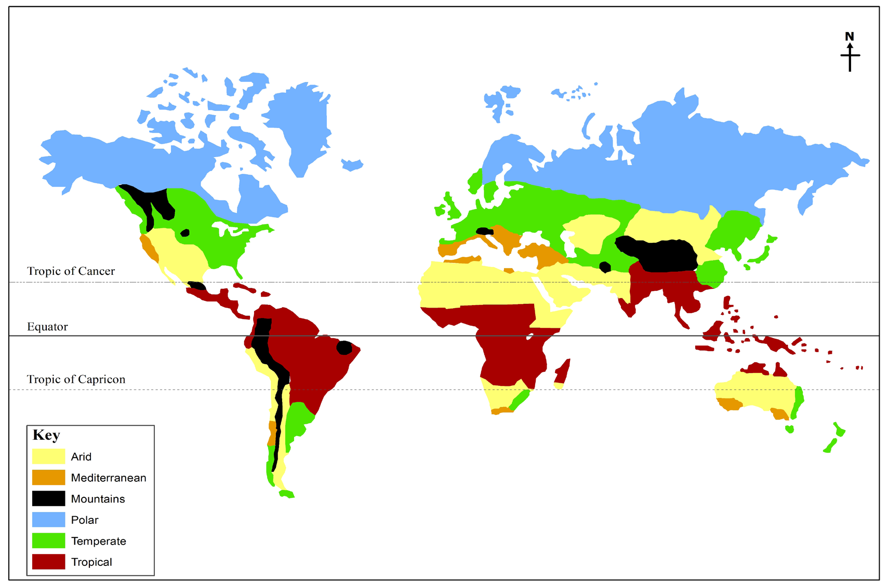

Activity 4.7
 Activity 4.7
Activity 4.7(a) Study the world map on the distribution of vegetation and identify the variety of vegetation found in different vegetation zones.
(b) Describe the economic activities carried out in forest areas.
Factors influencing the vegetation zones of the world
The distribution of the vegetation zones across the world is influenced by a combination of various factors. These factors interact in a complex way to determine the types of plants that can thrive in a particular region, resulting in the diverse array of the vegetation zones observed across the world.
Understanding these factors is crucial for studying and conserving different ecosystems and their plant communities. The main factors influencing distribution of vegetation in the world include climate, soil, topography, and biotic.
1. Climatic factor
Climate is the average weather condition of a place observed and recorded over a long period of time, usually over 30 years. It is one of the most significant factors affecting the distribution of vegetation zones. Sunlight, temperature, precipitation, and wind play crucial roles in determining the types of vegetation that can grow and survive in a particular area.
(a) Temperature: Influences the length of the growing season and the ability of plants to survive in extreme cold